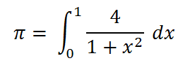
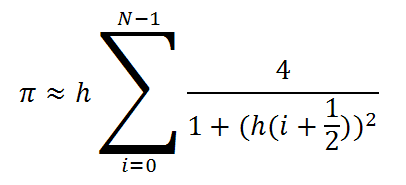
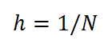
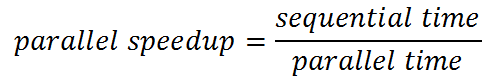

In this first week we haven't covered enough material in the lectures to do much new work on parallel programming. But many of you will have some experience of multi-threaded programming in Java from the second year module on operating systems and architectures (COSINE). For those of you who did attend COSINE, this week's lab will be a refresher on using Java threads to speed up a simple calculation through parallelism. For any of you who did not, hopefully this will act as a primer.
In fact the lab script here is only slightly adapted from the final lab script in the first term of COSINE, so some of you have already seen this material. But it will become much more relevant in the context of the current module; please go through it and make sure you attempt the exercises at the end.
I am going to assume you know how to compile and run Java programs on the computers in the lab. Talk to me if you do not. A popular option for this is likely to be NetBeans, available through AppsAnywhere under Windows. Other plausible possiblities include the Oracle Java Development Kit (JDK) or Eclipse. Unfortunately neither of the latter are currently available on the Windows build of the lab machines, but I expect many of you will be using your home computers this year.
Calculating π
There are many ways to approximately calculate the mathematical constant π. One "brute force" method is based on the following formula from calculus:

Using the rectangle rule for numerical integration, this can be approximated by breaking up the x range into steps:

where N is the number of steps, and:

is the size of a single step.
Using JDK or NetBeans, create a Java program or project to calculate the sum numerically. Your main class may look like this:
public class SequentialPi {
public static void main(String[] args) {
int numSteps = 10000000;
double step = 1.0 / (double) numSteps;
double sum = 0.0;
for(int i = 0 ; i < numSteps ; i++){
double x = (i + 0.5) * step ;
sum += 4.0 / (1.0 + x * x);
}
double pi = step * sum ;
System.out.println("Value of pi: " + pi);
}
}
Here the constant N is represented by the value of the variable
numSteps. We have set it to 10 million, which is enough to
get a pretty accurate estimate of π.
In Java, double is one of the standard types for representing a floating point number.
Run this program and record the result. Compare it with known estimates of π - look here, for example.
A Parallel Program
Our formula for calculating π is simply a large sum of independent terms. In this case we can break the sum into two halves (say) and do two sums in separate threads. Then at the end we just have to add together the two numbers that emerge.
Here is a program that does that:
public class ParallelPi extends Thread {
public static void main(String[] args) throws Exception {
ParallelPi thread1 = new ParallelPi();
thread1.begin = 0 ;
thread1.end = numSteps / 2 ;
ParallelPi thread2 = new ParallelPi();
thread2.begin = numSteps / 2 ;
thread2.end = numSteps ;
thread1.start();
thread2.start();
thread1.join();
thread2.join();
double pi = step * (thread1.sum + thread2.sum) ;
System.out.println("Value of pi: " + pi);
}
static int numSteps = 10000000;
static double step = 1.0 / (double) numSteps;
double sum ;
int begin, end ;
public void run() {
sum = 0.0 ;
for(int i = begin ; i < end ; i++){
double x = (i + 0.5) * step ;
sum += 4.0 / (1.0 + x * x);
}
}
}
Remember that in Java a thread is implemented by creating an instance
of a class that extends the Thread class. Any such class will
have to have a run() method which contains the work that is
executed in the thread. A parent program (our main() method)
spawns a thread by
executing the start() method on a thread object.
A thread finishes when its run() method completes. The parent program can - as here - wait until spawned threads finish by executing the join method on the thread object.
The main calculation is done in the run() method of the threads. You'll notice this is very similar to the main loop of the sequential program, except that the loop goes from some begin value to some end value. These values are set in fields of the thread objects, created by the main program. We have two thread objects and the first one does the sum from 0 up to numSteps/2, and the second object does the sum from numSteps/2 up to numSteps.
In the interests of simplicitly, I have eschewed good object-oriented pratices - so the main program directly accesses instance variables of objects it creates (begin, end, sum, etc). If this offends your sensibilities, feel free to rewrite the code in a more OO fashion!
Although the strategy really is straightforward, you'll notice the program suddenly got much longer. This is fairly typical of parallel programs. As this course develops you will meet various other programming paradigms that try to make parallel programming easier.The total number of steps is the same as for the sequential program, but this time we have defined this value in a static variable, so it can easily be shared by two threads.
Run this program. The exact result for π will be slightly different to the result from the sequential program, because the additions in the sum are performed in a different order, and rounding errors will accumulate slightly differently. But the accuracy of the result should be similar.
Benchmarking
There isn't much point doing parallel programming if it doesn't make our programs go faster. We need to time the runs for the sequential and parallel versions of our program, and compare how long each takes.
We will use the method System.currentTimeMillis() to get the current time. The time is represented in a interesting way - as the number of milliseconds that have elapsed from midnight, January 1, 1970. The base date - the beginning of 1970 - is sometimes called UNIX Epoch. Roughly speaking, it is when the UNIX operating system was invented. This is an important date for Java and other languages influenced by UNIX.
For our benchmarks we only care about the difference between two times - the time when the computation starts and the time when it ends. Using currentTimeMillis() and taking a difference will naturally give us the time for the computation in milliseconds.
Change the main method of the SequentialPi to look like this:
public static void main(String[] args) {
long startTime = System.currentTimeMillis();
int numSteps = 10000000;
double step = 1.0 / (double) numSteps;
double sum = 0.0;
for(int i = 0 ; i < numSteps ; i++){
double x = (i + 0.5) * step ;
sum += 4.0 / (1.0 + x * x);
}
double pi = step * sum ;
long endTime = System.currentTimeMillis();
System.out.println("Value of pi: " + pi);
System.out.println("Calculated in " +
(endTime - startTime) + " milliseconds");
}
Run the new version, and record the time taken.
Similarly, change the main method of ParallelPi to look like this:
public static void main(String[] args) throws Exception {
long startTime = System.currentTimeMillis();
ParallelPi thread1 = new ParallelPi();
thread1.begin = 0 ;
thread1.end = numSteps / 2 ;
ParallelPi thread2 = new ParallelPi();
thread2.begin = numSteps / 2 ;
thread2.end = numSteps ;
thread1.start();
thread2.start();
thread1.join();
thread2.join();
long endTime = System.currentTimeMillis();
double pi = step * (thread1.sum + thread2.sum) ;
System.out.println("Value of pi: " + pi);
System.out.println("Calculated in " +
(endTime - startTime) + " milliseconds");
}
and record the time this version takes to run.
The ratio of the time for the sequential run to time for the parallel run is called the parallel speedup:

Calculate the parallel speedup for your runs. Is it 2? Explain.
Reduce numSteps to 1000000 (1 million), run both programs again and calculate the new parallel speedup. Increase numSteps to 1000000000 (1 billion). Calculate the parallel speedup again. Explain your results.
Exercises
-
Make a "quad-core" version of ParallelPi that divides the range of the sum into four equal parts, and uses four threads. Does this version go faster than the two-threaded version? How many cores does your machine have?
(If you finish that, you may try to increase the number of threads further to exploit hyperthreading - ask me if you don't know what this means!)
-
Try using System.nanoTime() in place of System.currentTimeMillis() for timing. Does this give more accurate results?